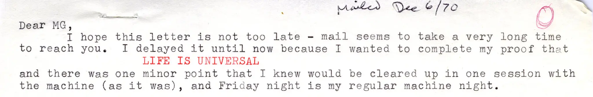

The final mindblowing characteristic of Life that I’ll introduce you to is the idea that, as Conway proved in 1982, “Life is universal”. This statement is admittedly phrased quite sensationally! The true meaning, although not quite as shocking as it may initially sound, is still absolutely extraordinary.
What Conway proved about his Life is that it is capable of computing anything computable. Anything that any old computer can compute, the Game of Life can compute also: it is “theoretically as powerful as any computer with unlimited memory and no time constraints”. It is equivalent to a universal Turing machine; it is Turing-complete.
This is, once again, absolutely bonkers. To think that this simple game, with only three rules behind it, can simulate any computer? The notion sounds insane. But, the proof is in the pudding, and I’ll leave you with this mind-boggling and slightly-terrifying video: